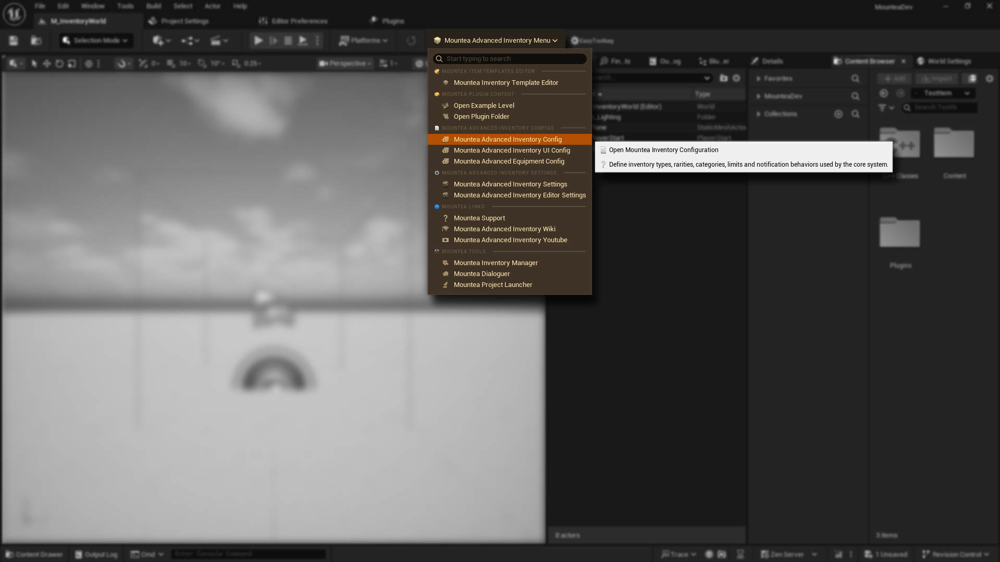
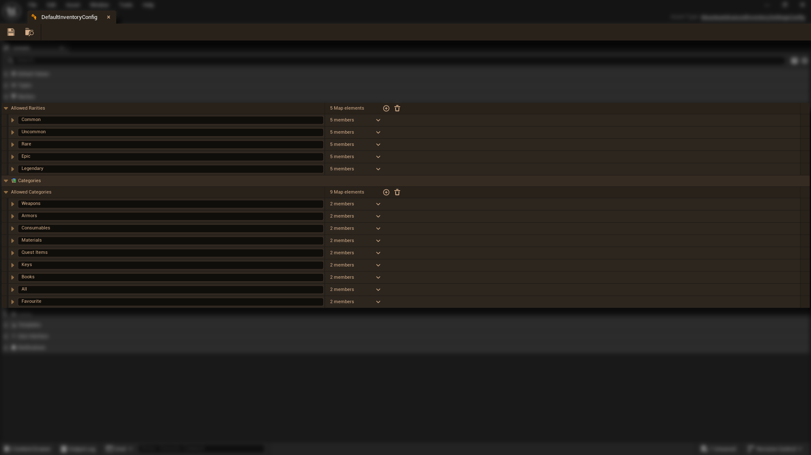

This page explains how to open the Inventory Configuration asset and how to configure the most important systems: item rarities and item categories.
The plugin ships with a default configuration file. You should start by duplicating this file instead of creating one manually.
This opens the configuration asset where all global inventory settings are stored.

You can also open the Configuration file directly: Inventory Configuration.
If the button fails to open Configuration, you have to first set it up in Project Settings.
The configuration is structured into collapsible sections. For most projects, the two most important sections to customize are:

Rarities define the quality and visual identity of items. Each rarity entry controls how items appear in UI and how they may be prioritized in systems such as loot, pricing, or sorting.
Add or reorder rarities as needed, but avoid deleting rarities actively used by existing items!
Categories determine how items are grouped, filtered, and processed. They are used by inventory UI, rules systems, and gameplay logic to decide where items belong.
Categories may contain nested sub-categories. These inherit high-level behavior but allow finer organization, such as:
Every item must belong to an category to ensure proper behavior.
Once your rarities and categories are defined, they immediately become available in editors, templates, and runtime systems. New items will automatically use them.
Once you are comfortable with navigating the editor, you can start creating new item templates, assigning icons and meshes, and filling in gameplay data. Next page will demonstrate how to create your first item template.